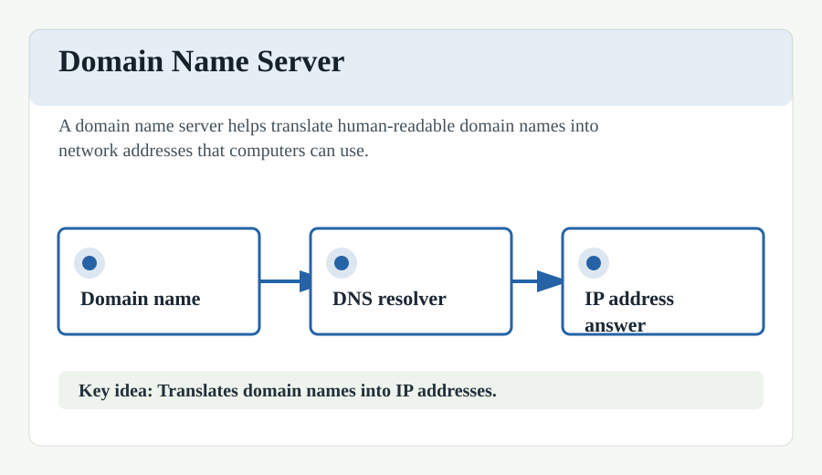

Domain Name System (DNS)
The Domain Name System (DNS) is a hierarchical and decentralized naming system for computers, services, and other resources connected to the Internet or a private network. It serves as the "phonebook" of the Internet by translating human-readable domain names (like example.com) into numerical IP addresses (like 192.0.2.1) that computers use to identify each other.
When you enter a URL in your browser, a DNS query is initiated. This process typically involves several types of servers:
- DNS Resolver: The first stop, usually managed by your ISP, which searches its cache or queries other servers.
- Root Nameservers: Direct the resolver to the appropriate Top-Level Domain (TLD) server (e.g., for .com or .org).
- TLD Nameservers: Point to the Authoritative Nameserver for the specific domain.
- Authoritative Nameservers: Provide the final IP address for the requested domain name.
DNS is critical for the Internet's usability, as it allows users to navigate the web using easy-to-remember names rather than complex strings of numbers. It also supports various record types beyond IP addresses, such as MX records for mail routing and CNAME records for aliasing.
